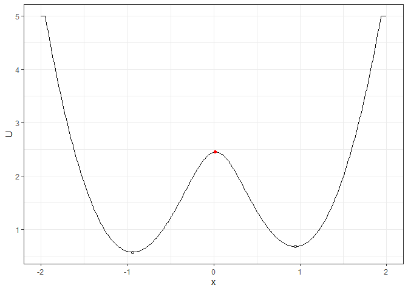
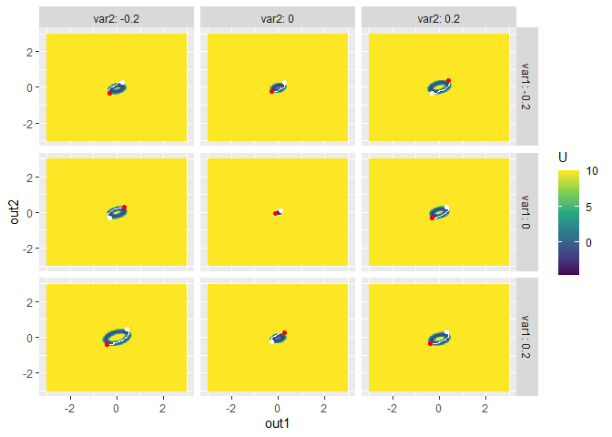

The goal of simlandr is to provide a set of tools for constructing potential landscape function for dynamic systems, especially for psychological formal models.
Installation
You can install the development version from GitHub with:
# install.packages("devtools")
devtools::install_github("Sciurus365/simlandr")Example
library(simlandr)
# Single simulation
single_test <- sim_fun_test(
par1 = list(var1 = 1),
par2 = list(var2 = 1, var3 = 0)
)
# Batch simulation: simulate a set of models with different parameter values
## Step 1: create a variable set
batch_test <- new_var_set()
## Step 2: add variable and its range to the set
batch_test <- batch_test %>%
add_var("par2", "var3", 0, 0.5, 0.1)
## Step 3: make variable grids
batch_test_grid <- make_var_grid(batch_test)
## Step 4: run the batch simulation
batch_test_result <- batch_simulation(batch_test_grid, sim_fun_test,
default_list = list(
par1 = list(var1 = 0),
par2 = list(var2 = 0, var3 = 0)
)
)
batch_test_result
#> Output(s) from 6 simulations.
batch_test_result <- attach_all_matrices(batch_test_result)
# WARNING if you are using bigmemory: Due to a bug of RStudio (https://github.com/rstudio/rstudio/issues/8923), its variable inspector cannot handle objects with null external pointers. Work around: Turn off "automatically load workspace image"; change the variable inspector to "Manual refresh only", and then load the image and use attach_all_matrices for all batch simulations. After that, you can safely use the variable inspector. #
# Batch simulation with two parameters
batch_test2 <- new_var_set()
batch_test2 <- batch_test2 %>%
add_var("par1", "var1", -0.2, 0.2, 0.2) %>%
add_var("par2", "var2", -0.2, 0.2, 0.2)
batch_test_grid2 <- make_var_grid(batch_test2)
batch_test_result2 <- batch_simulation(batch_test_grid2, sim_fun_test,
bigmemory = FALSE,
default_list = list(
par1 = list(var1 = 0),
par2 = list(var2 = 0, var3 = 0)
)
)
batch_test_result2
#> Output(s) from 9 simulations.
# Build landscapes
## 1. 2d density landscape
l1 <- make_2d_density(single_test, x = "out1", from = -2, to = 2, adjust = 1)
plot(l1)
## 2. 3d static interactive landscape
l2 <- make_3d_static(single_test, x = "out1", y = "out2", lims = c(-3, 3, -3, 3), h = 0.01, kde_fun = "ks")
#> Calculating the smooth distribution...
#> Done!
#> Making the plot...
#> Done!
#> Making the 2d plot...
#> Done!
# l2 <- make_3d_static(single_test, x = "out1", y = "out2", lims = c(-3,3,-3,3), h = 0.5, kde_fun = "MASS") # If you want to use kernel smooth function from MASS
# plot(l2) # Markdown cannot render interactive plots. You can try to run this command at your device.
plotly::orca(plot(l2), file = "man/figures/README-example-l2.png")
knitr::include_graphics("man/figures/README-example-l2.png")
plot(l2, 2) # the heatmap version
## 3. 3d landscape animation with a changing parameter
l3 <- make_3d_animation(batch_test_result, x = "out1", y = "out2", fr = "var3", zmax = 20, lims = c(-3, 3, -3, 3), h = 0.002, individual_landscape = TRUE)
#> Wrangling data...
#> Done!
#> Making the plot...
#> Done!
#> Making the 2d plot...
#> Done!
#> Making the 3d matrix...
#> Making the 2d plot...
#> Done!
#> Done!
# plot(l3)
plotly::orca(plot(l3), file = "man/figures/README-example-l3.png")
knitr::include_graphics("man/figures/README-example-l3.png")
plot(l3, 3)
## 4. 2d density matrix with two changing parameters
l4 <- make_2d_matrix(batch_test_result2, x = "out1", rows = "var1", cols = "var2", from = -1, to = 1, adjust = 0.1, individual_landscape = TRUE)
#> Making the plot...
#> Done!
plot(l4)
l4_1 <- make_2d_matrix(batch_test_result, x = "out1", cols = "var3", from = -3, to = 3, adjust = 0.1)
#> Making the plot...
#> Done!
plot(l4_1)
## 5. 3d (including color dimension) heatplot matrix with two changing parameters
l5 <- make_3d_matrix(batch_test_result2, x = "out1", y = "out2", rows = "var1", cols = "var2", lims = c(-3, 3, -3, 3), h = 0.001, kde_fun = "ks", zmax = 10, individual_landscape = TRUE)
#> Making the 2d plot...
#> Done!
plot(l5)
l5_1 <- make_3d_matrix(batch_test_result, x = "out1", y = "out2", cols = "var3", lims = c(-3, 3, -3, 3), h = 0.001, kde_fun = "ks", zmax = 10)
#> Making the 2d plot...
#> Done!
plot(l5_1)
# Calculate energy barriers
b1 <- calculate_barrier_2d(l1, start_location_value = -2, end_location_value = 2, start_r = 0.3, end_r = 0.3)
plot(l1) + get_geom(b1)
b2 <- calculate_barrier_3d(l2, start_location_value = c(-2.5, -2), end_location_value = c(2.5, 0), start_r = 0.3, end_r = 0.3)
plot(l2, 2) + get_geom(b2)
# b3 <- calculate_barrier(l3, start_location_value = c(0,0), end_location_value = c(2, 1), start_r = 0.3, end_r = 0.6)
# b3 <- calculate_barrier(l3, make_barrier_grid_2d(batch_test_grid, start_location_value = c(0,0), end_location_value = c(2, 1), start_r = 0.3, end_r = 0.6))
# make_barrier_grid_3d(batch_test_grid, start_location_value = c(0,0), end_location_value = c(2, 1), start_r = 0.3, end_r = 0.6, print_template = TRUE)
b3 <- calculate_barrier_3d_batch(
l3,
make_barrier_grid_3d(batch_test_grid,
df =
structure(list(start_location_value = list(
c(0, 0), c(0, 0),
c(0, 0), c(0, 0), c(0, 0), c(0, 0)
), start_r = list(c(
0.1,
0.1
), c(0.2, 0.2), c(0.2, 0.2), c(0.3, 0.3), c(0.3, 0.3), c(
0.3,
0.3
)), end_location_value = list(c(0, 0), c(
1,
0.5
), c(1, 0.5), c(1.8, 0.8), c(2, 1), c(2, 1)), end_r = c(
0.6, 0.6,
0.6, 0.6, 0.6, 0.6
)), row.names = c(NA, -6L), class = c(
"var_grid",
"data.frame"
))
)
)
plot(l3, 3) + get_geom(b3)
#> geom_path: Each group consists of only one observation. Do you need to adjust
#> the group aesthetic?
b4 <- calculate_barrier_2d_batch(l4, start_location_value = -0.25, end_location_value = 0.25, start_r = 0.2, end_r = 0.2)
plot(l4) + get_geom(b4)
b5 <- calculate_barrier_3d_batch(l5, start_location_value = c(-1, -1), end_location_value = c(1, 1), start_r = 0.3, end_r = 0.3)
#> The U in this range is too high. Searching range expanded...
#> r = c(0.691959798994974,0.691959798994974)
#> The U in this range is too high. Searching range expanded...
#> r = c(0.752261306532662,0.752261306532662)
#> The U in this range is too high. Searching range expanded...
#> r = c(0.691959798994974,0.691959798994974)
#> The U in this range is too high. Searching range expanded...
#> r = c(0.691959798994974,0.691959798994974)
#> The U in this range is too high. Searching range expanded...
#> r = c(0.601507537688441,0.601507537688441)
#> The U in this range is too high. Searching range expanded...
#> r = c(0.571356783919597,0.571356783919597)
#> The U in this range is too high. Searching range expanded...
#> r = c(0.752261306532662,0.752261306532662)
#> The U in this range is too high. Searching range expanded...
#> r = c(0.752261306532662,0.752261306532662)
#> The U in this range is too high. Searching range expanded...
#> r = c(0.903015075376882,0.903015075376882)
#> The U in this range is too high. Searching range expanded...
#> r = c(0.903015075376882,0.903015075376882)
#> The U in this range is too high. Searching range expanded...
#> r = c(0.752261306532662,0.752261306532662)
#> The U in this range is too high. Searching range expanded...
#> r = c(0.752261306532662,0.752261306532662)
#> The U in this range is too high. Searching range expanded...
#> r = c(0.691959798994974,0.691959798994974)
#> The U in this range is too high. Searching range expanded...
#> r = c(0.631658291457285,0.631658291457285)
#> The U in this range is too high. Searching range expanded...
#> r = c(0.691959798994974,0.691959798994974)
#> The U in this range is too high. Searching range expanded...
#> r = c(0.691959798994974,0.691959798994974)
#> The U in this range is too high. Searching range expanded...
#> r = c(0.631658291457285,0.631658291457285)
#> The U in this range is too high. Searching range expanded...
#> r = c(0.691959798994974,0.691959798994974)
plot(l5) + get_geom(b5)